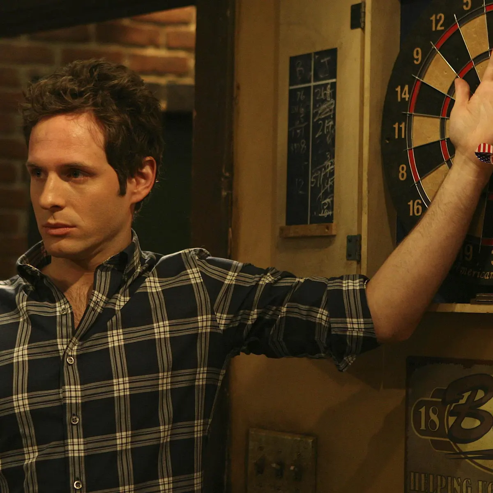
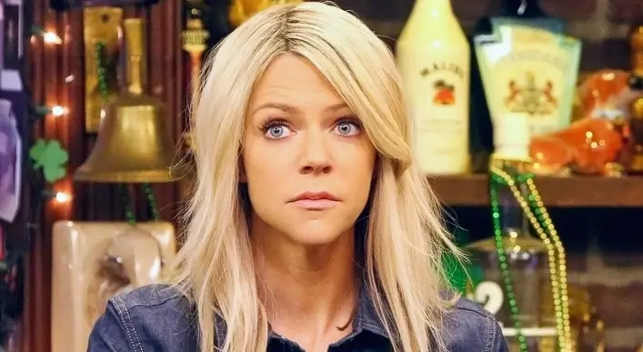
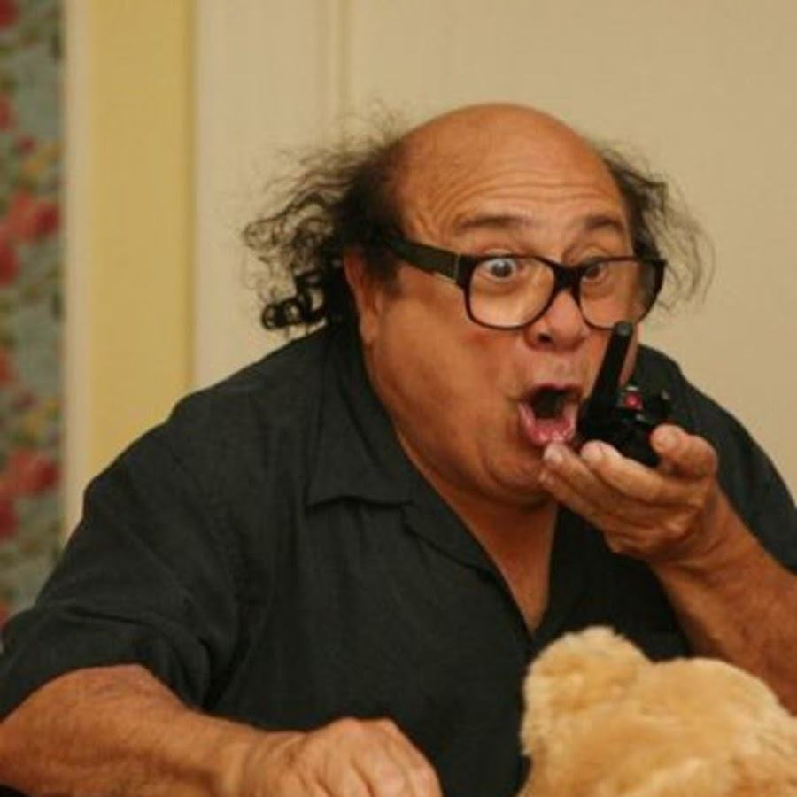

Dennis Reynolds

Dennis is Dee's twin brother and the stepson of Frank. Selfish, arrogant, and narcissistic, Dennis displays zero empathy towards others and experiences delusions that cause him to believe that he is extremely attractive to others. Throughout the show Dennis has created the D.E.N.N.I.S. system which is basically a way to seduce women by pretending to love them. The acronym stands for Demonstrate value, Engage physcially, Nurture dependence, Neglect emotionally, Inspire hope, and Separate entirely. He's also stolen the identity of Brian LeFevre, a man whose wallet he found and pretends to live as Brain as long as he can, and he even abandoned his own son whom he had after an evening with a waitress
Deandra "Sweet Dee" Reynolds

Deandra is Dennis's twin sister and the stepdaughter of Frank. The main bartender of Paddy's Pub, she is often at the receving end of taunts and jokes by the rest of the gang, with their favorite joke being to compare Dee to a bird. Her character was initially supposed to be the voice of reason of the group, but Kaitlin Olson, the actress who plays Dee, argued against this and wanted Dee to be just as crazy and morally corrupt as the others. Some of Dee's worst moments include setting her college roommate on fire, holding a funeral for a fake baby in order to prevent getting audited by the IRS, and has proven to be terrible at her job.
Frank Reynolds

Frank is the stepfather to Dennis and Dee and is the owner of Paddy's Pub. In Season 2, Frank finds out from his ex-wife that he is not the biological father of Dennis and Dee, however he is shown to be a father-figure to both of them throughout the series. Frank lives in an apartment with Charlie (who also might be son), has a tendency to pull out a gun on people, and set Dee on fire multiple times with the goal of making her famous.